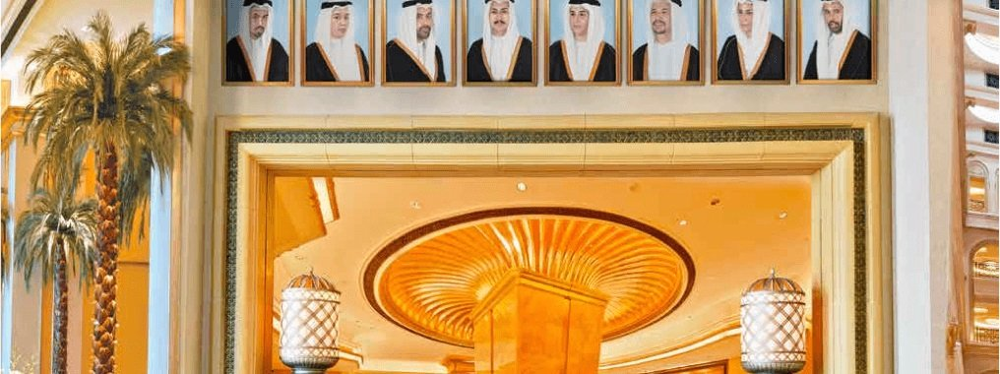
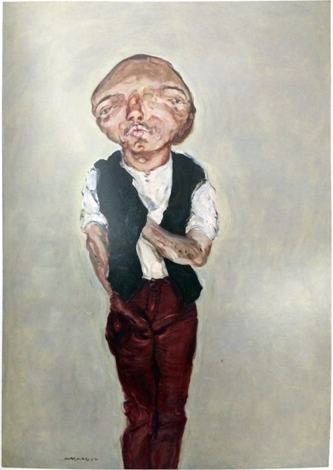
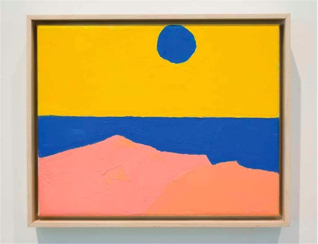
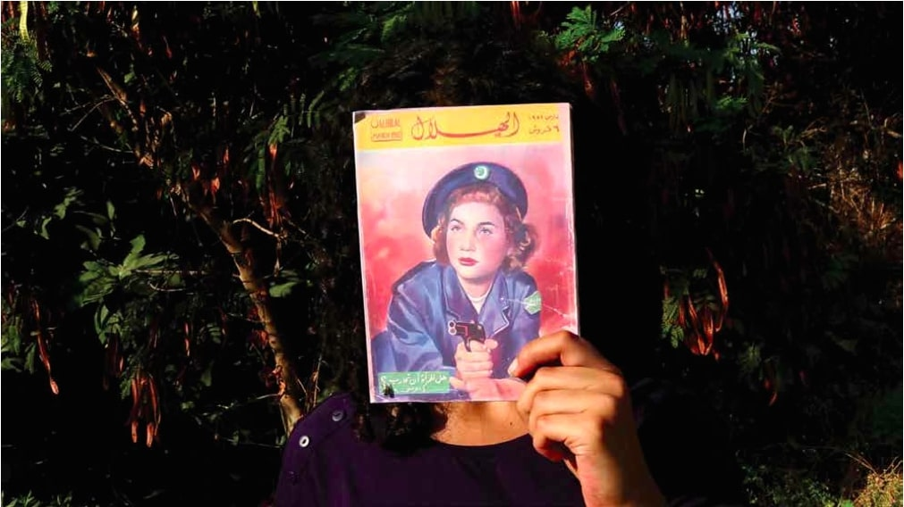
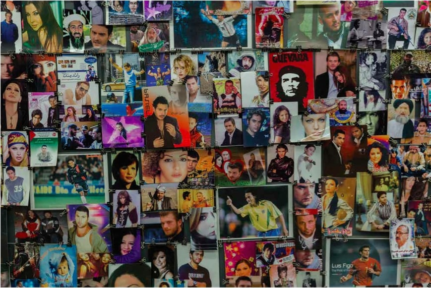

Originally published in Mada Masr on 7 August 2014
Conversation between Ismail Fayed & Jenifer Evans
"Here and Elsewhere" is an exhibition of 40 contemporary artists from the Arab world at New York City's New Museum, on show from July 16 to September 28. Jenifer Evans — Mada Masr culture editor — and Ismail Fayed — writer and researcher — went to see the show and afterward sat down to discuss it.

Detail of a work by the GCC collective, representing Gulf perspectives in the exhibition's geographic organization
Ismail Fayed: I was very apprehensive about the idea of another Arab show, to be honest. This show comes at a point where the region is going through a critical historical moment, and it's rare that institutions respond dynamically to historical contingencies.
Jenifer Evans: It's interesting how the exhibition catalogue reflects on that. In contrast to some of the conversations in the book, though, I thought the wall texts were very educational, journalistic and basic, always bringing it back to biography, narrative and politics.
IF: I thought also that the curators' note was without any sense of humor — it took itself very seriously.
JE: The wall texts kept insisting on war.
IF: It's interesting you say that, because a lot of my non-Arab friends characterized the show as being very violent, in terms of subject matter. To me, somehow, the notion of war did not seem out of place.
JE: You felt like it's inevitable?
IF: Yes. It's a very recurrent narrative for this region, even if you haven't witnessed war directly. War seemed to be something always happening, in the background of things. It didn't feel to me as if it was imposed in the show.
JE: That's interesting.
IF: War does not preclude the possibility of other things happening. I find it an interesting idea that war would become an all-engrossing condition that doesn't allow any other experience to take place.
JE: Because everything was so close together in the exhibition, even the works that didn't have any war in them, even works which were very abstract, were very much framed by the ones with war. So even if you're looking a painting of a guy by Marwan, then you're hearing a video about war in the background.
IF: There is a contagious effect.
JE: There is no point in the show where you can't hear a video.
IF: Or see some sort of visual trace of war. That's very true. But let me go back, and ask you how you thought the works were distributed along the space. Did you have any observations on that?
JE: My main impression was that it was quite crowded. A lot of works didn't have much breathing space. And although there was a lot of repetition in terms of content, I didn't feel like the works were speaking to each other that much. They were so close together, yet felt quite isolated from each other. It felt less like a curated group show in a way, than an archive. What did you think?
IF: I was very surprised that there seemed to be a distinction by geographic location. This was astonishing to me, because I could almost have sworn that they would not do that. But the ground floor was all Gulf artists.
JE: That's a good point.
IF: And that to me was very bizarre, to have this geographic distinction, as if somehow artists from a certain regional parts of the Arab world have certain shared artistic preoccupations that cannot be placed with art from other parts, such as Egypt, Syria and Lebanon, which are always grouped together. Always.
JE: Yes, in many different ways.
IF: So, first, that was a bit shocking — and unnerving. Then upstairs the Levant, Egypt and Iraq, and then North Africa – a whole floor of North Africa. Yto Barrada, Bouchra Khalili's mapping project, and Selma and Sofiane Ouissi's "Laaroussa" (2011). And I was wondering, was this consciously done? Because it does seem to be bounded by geography rather than by interest or medium.
JE: Did you feel like that continued up to the top of the building?
IF: Yes. I think perhaps the only thing that brought them together was Ala Younis's curated section on the top floor which was across the board, that archive of posters and so on. But I think that's because she chose a time when the Arab world seemed to have some sort of uniformity. That post-colonial narrative.
JE: But was there any Gulf stuff in that?
IF: No. It was Algeria, Egypt, Syria, Palestine, Lebanon, Jordan. From the curatorial conversation in the catalogue, and the exhibition note, it has seemed that they went to great lengths not to use the idea of a specific geography dictating artistic interest or practice, but at the same time it was like, let's put the Gulf people together, let's put the Egyptians and Syrians together because they have a lot of shared history, and put the Palestinians and the Lebanese together.
JE: Right.
IF: And then the other thing that struck me as very interesting is the fact that there's a lot of interest in the idea of the problematics of representation, and specifically taking as a departure point Jean-Luc Godard and Anne-Marie Miéville's film "Here and Elsewhere" (1976), the idea of memory in relation to photography and film, and this had the unlikely result of editing certain narratives in a certain way. I thought that was a very interesting line to follow through. And to me it would have been much more exciting if the works of some of those Arab artists had been juxtaposed with some of those late leftist filmmakers from France.
JE: I see what you mean.
IF: It would have been nice to spar back and forth between something like Godard's initiative to film the Palestinian resistance movement in 1970, and to release that film in 1976, and to see what was an interesting Arab response, then and now. Do the artists reference Godard or Miéville directly, or other leftist filmmakers? Like Maha Maamoun for example, you know Maamoun's "2026" (2010), referencing Chris Marker's "La Jetée" (1962)?
JE: Yes.
IF: That would have been an interesting thread. Instead of restricting the scope of the show, again, to just Arab art. Like somehow it has to develop its own interests and answers itself, not in dialogue with other practices or interests. It just makes the region represent itself and answer to itself.
JE: And a lot of these artists are working in the diaspora anyway, for example those paintings by Marwan, you can clearly see the influence of German artists with whom he was no doubt working and talking.

Marwan's oil paintings showing influence of post-war German art, yet contextualized through biographical narrative of displacement
IF: Marwan's work is a good example of work that really stands alone, with regards to the other works in the show. There are very few other oil paintings, and it has a very specific aesthetic, reminiscent of post-war German art, where it comes from. Maybe it would have been more exciting to see those Marwan works in reference to those other German artists with the same preoccupations. Instead of putting Marwan among all that very heavy, autobiographical work that falls in that very precarious region between documentation and archive, which marks a lot of contemporary practices from the Arab world, because documentation and autobiography are so politicized that they become primary material for so many people.
JE: The wall text for Marwan mentioned some German artists, but it was mainly talking about his childhood, and leaving Syria, and his family having all their stuff confiscated because of a regime change. I felt the show was trying to reclaim this work to fit its content-based narrative, and one of war.
IF: Even if it doesn't itself speak that. You're right.
JE: Even if you wanted to see those pictures as something else, you had to look at them, in that context, through politics. And even if it is about politics, you had no chance to look at it and not know that it is.
IF: I read the text after looking at the paintings, so for a moment I felt the works were really out of place. Then I read the note and thought, ah, so this is how you make it fit! How you brought it back, even if the artist himself didn't see it as about displacement or war.
JE: Or even if he was thinking about it, but didn't want it to be explicit in the work.
IF: Exactly.

Etel Adnan's abstract landscape paintings that appeared "out of place" until contextualized through wall texts about war
JE: I also felt the same with Etel Adnan's work. Walking into that room and seeing those abstract landscape paintings that are very painterly and beautiful, I thought, wow, these are out of place in this show. And again I made the mistake of reading the wall texts and reading about war. I also went to a talk with Khaled Jarrar, Lamia Joreige and Charif Kiwan of the Syrian collective Abounaddara — Jarrar had to be on Skype because he was not allowed out of the West Bank — and it was interesting; but again, the discussion was about stories and historical events rather than questioning subjectivities, or agendas, or the authority of certain accounts.
Although the curators talk a lot about the role of images in shaping ideologies and representations, and reflecting on that like Godard and Miéville do in the film, I felt that because of the heaviness of the narrative or the insistence on narrative in the show, it was difficult to really get that sense of reflection — apart from in works where that same approach is extremely strong, such as Marwa Arsanios' piece, "Have you Ever Killed a Bear? Or Becoming Jamila" (2013-14), or Walid Raad's creation of a pioneering abstract artist, which confused a lot of people.

Marwa Arsanios' "Have you Ever Killed a Bear? Or Becoming Jamila" (2013-14), one of the works with strong reflective approach to representation
IF: Yes, no Arab art was using abstraction in that way, back in the early 1940s. Also, the almost fictitious works, like Akram Zaatari's "Objects of study/The archive of Shehrazade/Hashem el Madani/Studio practices" (2006), which uses existing archives to create alternative narratives or experiences.
JE: But overall, the content trumped the kind of reflection the show's title promised.
IF: That's very true: The content overrides the ability to have a distance. So some viewers might come away thinking that all the Arabs do are documentary practices.
JE: It's also, again, because the works are so close together.
IF: It was too intense visually.
JE: And sonically. I don't think they were pushing that intensity in a deliberate way, it felt incidental that it ended up being so loud.
IF: I was talking with a friend about how the works were spatially organized, and how some rooms totally failed. I don't know if you remember that Wael Shawky video, in the same space as Amal Kenawy's video, and Van Leo — it was a terrible choice to place all these works together!
JE: There were also these little collages alongside the Wael Shawky video, Ali Jabri's series "Nasser" (ca. 1977-83), and no one was looking at them. You couldn't — the video is really big and loud, and you'd have to stand in front of it.
IF: It's very frontal, he's talking to you, and you really have to pay attention to it. It was a very bad choice of placement. And I didn't get what it was that connected the four artists' works.
JE: There wasn't the space to reflect on that.
IF: I know all of the works in that room very well, with the exception of the collage. I was able to enter their worlds and step out of them again, but in other rooms when I didn't know the works so well, I felt inundated by information and ended up with a mess. Or a certain work would overpower everything else, like Shuruq Harb's "The Keeper" (2011-13). That work was overwhelming, and I can barely remember anything else in that space. It was very well put together, the materiality, sizes and colors, and they're all images of people we know.

Shuruq Harb's "The Keeper" (2011-13), an overwhelming work that dominated its exhibition space
JE: One of the things I liked about the show was that I found artists I didn't know before, like Fouad Elkoury's surreal photographs of Beirut.
IF: For me, it was Bouchra Khalili's "The Mapping Journey Project" (2008-11). There was a pedagogical simplicity about it that I found interesting.
JE: I was also thinking about what wasn't included in the show, because obviously there's a very deliberate selection. Someone told me there are no New York-based artists, which is probably a good thing.
IF: Some artists refused to participate. Artists who say that their work should not be perceived as Arab, but as what it is. And that's an interesting position, I think.
JE: It's interesting to think about how that resulted in the show as it is. If some artists didn't want to be part of it because of that whole Arab label, seeing it as reductive, I wonder if that makes the show more reductive, because then you have fewer artists who are not explicitly engaged with some aspect of Arabness. So I wonder how much of it was a curatorial decision to have so many works that are unmistakably Middle Eastern. I would have liked to see more works that had more primarily formal concerns, as there are some being made in the region.
IF: Also in terms of memory and space, I wondered about the absence of Sherif El-Azma's "The Psychogeography of Loose Associations" (2007), which I think is one of the most fascinating works I've seen on the city, memory, identity, fiction and space. That was an oversight.
JE: Or he refused.
IF: Of course, I haven't asked him. But that work specifically targets what a lot of the artists are reflecting on — content in relation to their own subjectivities. There were also repetitions that made some works redundant — like Marwan Rechmaoui's sculptural piece, "Spectre (The Yacoubian Building)" (2006-8), and then the architectural model of refugee camp by Wafa Hourani, "Qalandia 2087" (2009) in the next room. I thought it was a bit excessive to choose two sculptural pieces of similar locations and artistic preoccupations.
Overall, I'm glad to have this intense exposure of 40 living Arab artists' work in the middle of New York, yet I'm a bit weary of the homogenous visual effect it has, in terms of imagery and aesthetics and preoccupations. If you haven't been exposed to other contemporary Arab artists, you might think that all Arab artists primarily collect war images or create massive archives of destroyed cities. Placing all these works together in that one space creates a homogenous effect. Perhaps if the show had happened over a longer time period at various venues, the overall effect would be different, but because it's one space you can't help but walk out with a very strong visual impression of nostalgia, of black-and-white war images.
"Here and Elsewhere" showed at the New Museum, New York, from July 16 to September 28, 2014.